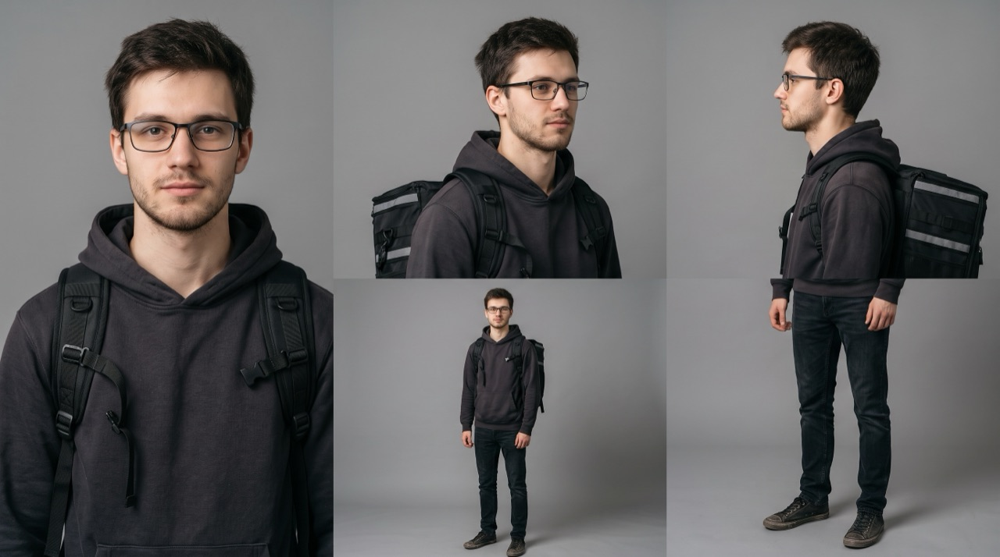
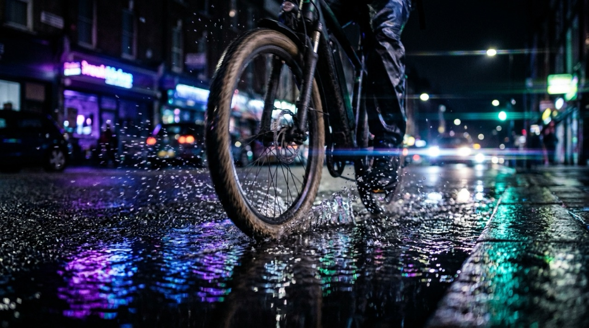

Будущий ролик сцена за сценой. Основная версия 15 секунд. Версия 30 секунд для сайта — это те же кадры плюс вставки, без перестановок. Сначала прочитайте сценарий, дальше идут кадры с описаниями, а в самом конце — аниматик.
Вечер городского курьера снят как трейлер боевика. Главный злодей здесь — его собственные очки: запотевают, сползают, не дают прочитать номер дома. После коррекции та же «погоня» проходится легко. Финальная точка — фантомный жест: рука тянется поправить очки, а их нет.

Студент, подрабатывает курьером. Тёмное худи, курьерский термокороб, тонкие прямоугольные очки с потёртой оправой.
До: суетится, поправляет очки, щурится, протирает их краем худи.
После: спокоен, с первого раза делает то, что раньше было подвигом.
Это временный ИИ-образ. После кастинга делаем карту персонажа реального актёра (фото с трёх ракурсов в гриме и костюме) и перегенерируем по ней все ИИ-кадры, чтобы актёр и его нейросетевой двойник совпадали.
| № | Время | Тип | Движение | Голос |
|---|
